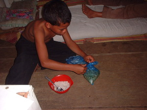

bukalas 
/bukalas/
v_rt.
“unroll”
vt.
for someone (egbukalas, migbukalas/imbukalas, bukalas, agent, eg><ø-) to unroll something (egbukalasen, imbukalas/migbukalas/pigbukalas, bukalasa, theme, eg><en-)
Wrd.Gloss: unroll
Seini ne lalag iyan ka pegbelat, pegpitew ke nekey ka tahù te imbugsung wey ke pegkal-kal te binug-sung.
Pitawa nu si Rimun seeyè te dapihan ka egbukalas te imbugsung din ne ngalap.
Look Remon on the other side unroll the meat that he had wrapped up.
Syn. belat —unroll mat
Ant. bugsung —wrap up
Ref.Gloss: unroll
Eng. unroll; spread out; unravel
Online dict status: -
Usage level: M
Updated by: RJH,AAA,RJH,RAA
Last updated: 30/Oct/2009
This page last updated: 19/May/2012
Copyright © 2009-2010, Matigsalug Language Christian Association, Inc